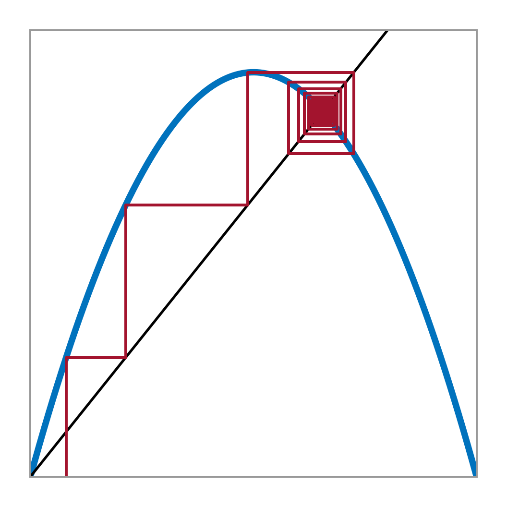
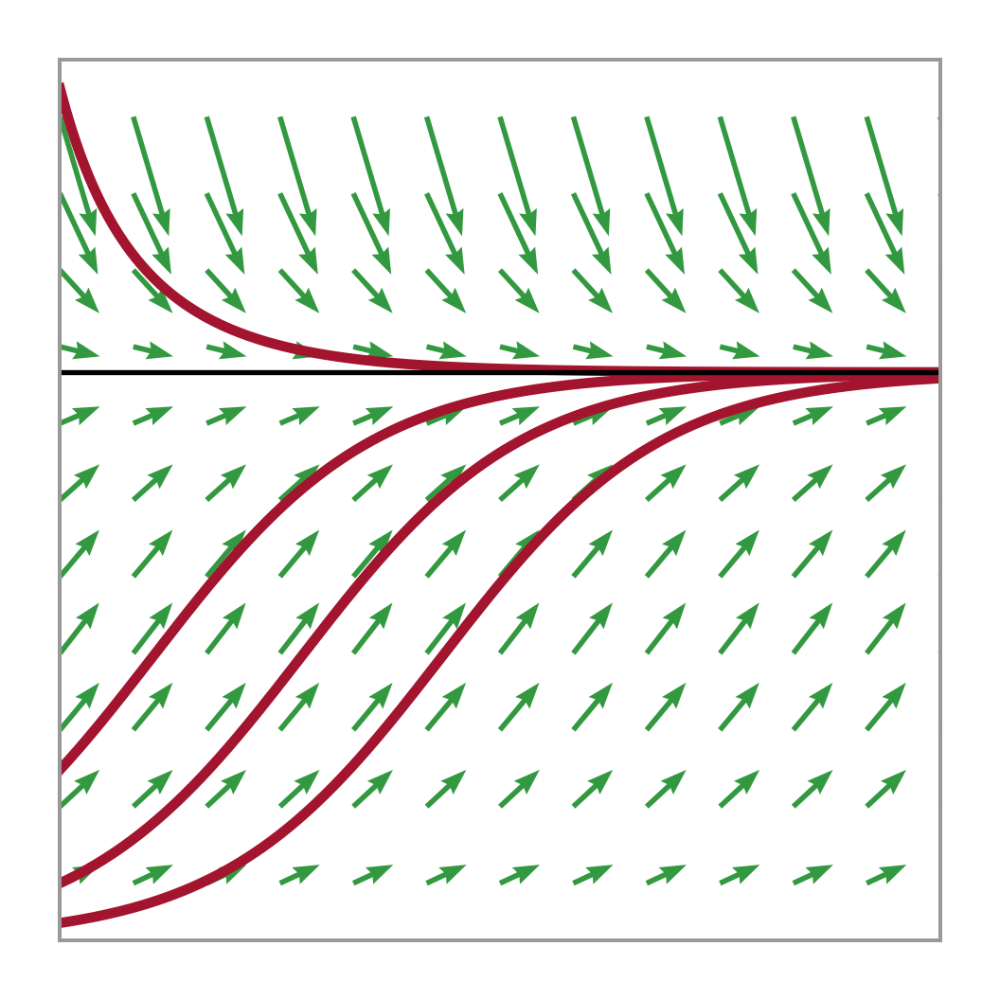

Companion website to the book
Dynamical Systems in the Life Sciences
Mathematics is best learned by doing the calculations yourself. Here you will find short programs in Julia, MATLAB, Python, and R for the figures of the book. They simulate the models, print numerical values, and produce the figures of the book.
The figure and equation numbers match those in the book. Change parameters and initial values and observe what happens. Selected apps run directly in the browser, without installation.




Chapters
Chapter 1
Discrete Dynamical Systems with One Variable
Sequences, difference equations, logistic growth, stability, Newton's method, and heart rhythm.
6 sections · 33 figures with programs · Apps
Chapter 2
Discrete Dynamical Systems with Several Variables
Predator and prey, matrix models, eigenvalues, the SIR model, and the propagation of the action potential.
5 sections · 19 figures with programs · Apps
Chapter 3
Continuous Dynamical Systems with One Variable
Differential equations, exponential and logistic growth, stability, Euler's method, and excitability of heart cells.
5 sections · 22 figures with programs · Apps
Chapter 4
Continuous Dynamical Systems with Several Variables
Systems of differential equations, phase plane, linear systems, Michaelis–Menten kinetics, stability, and limit cycles.
5 sections · 22 figures with programs · Apps
Julia
Julia version 1.10 or later with the packages Plots and OrdinaryDiffEq: once using Pkg; Pkg.add(["Plots", "OrdinaryDiffEq"]). Download the program and start it in the Julia console with include("name.jl").
MATLAB and GNU Octave
The MATLAB programs need no toolboxes and also run in the free GNU Octave. Put the file into the current folder and type its name without extension.
Python
Python 3 with the packages NumPy, SciPy, and Matplotlib, e.g. via Anaconda or pip install numpy scipy matplotlib. Download the program and start it with python name.py.
R
R with base graphics; for differential equations the package deSolve: once install.packages("deSolve"). Download the program and start it with source("name.R") in R or RStudio.
License
The programs are released under the MIT License: you may use, modify, and redistribute them freely, also in your own courses, provided the copyright notice is retained. The texts of the book are not covered.
Apps
Browser apps are on the section pages under “Try it in the browser”. The interactive MATLAB apps from the course (user interface in German) can be downloaded there.